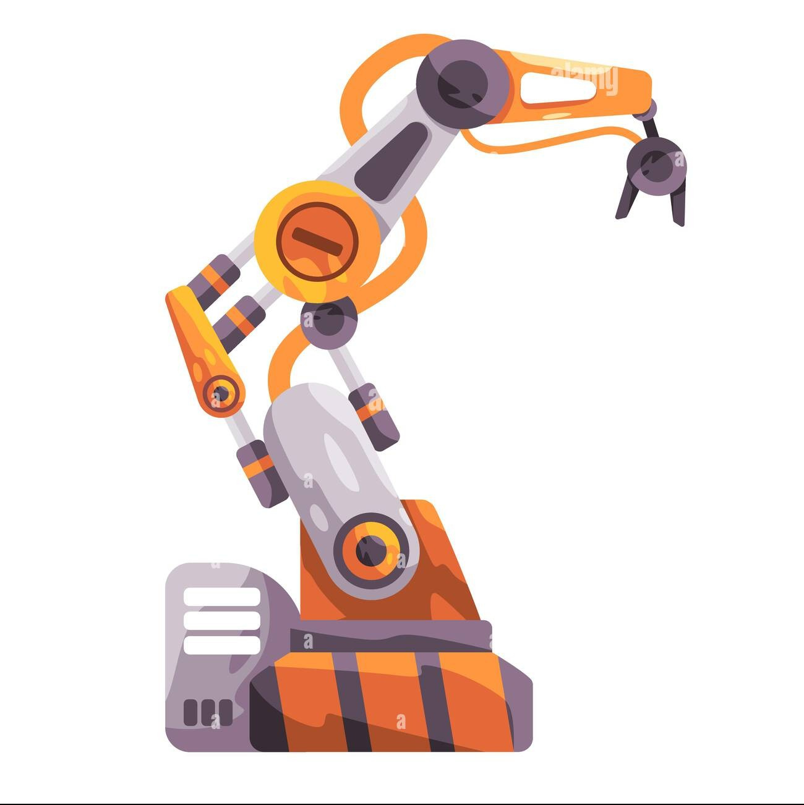

📷
Live Camera Vision
Captures images continuously for AI analysis.
CLAWEX uses Artificial Intelligence, computer vision, Bluetooth communication, and robotics to detect waste and sort it into the correct bin.

ABOUT
CLAWEX is an AI-powered smart waste sorting robot designed to improve recycling efficiency. A camera captures the waste, AI identifies the object, and the system can display the result or control a robotic claw that places the waste into the correct bin.
It combines machine learning, automation, and robotics into one project that is practical, modern, and competition-ready.
FEATURES
Captures images continuously for AI analysis.
Recognizes recyclable materials with high accuracy.
Delivers instant predictions in real time.
Wireless communication with Arduino.
Automatically sorts detected waste.
Encourages sustainable waste management.
WORKFLOW
Captures an image of the waste.
Identifies the waste using machine learning.
Processes the prediction result.
Sends commands wirelessly.
Controls the robotic arm.
Places waste into the correct bin.
MISSION CONTROL
Camera will start automatically.
Waiting...
None
Unknown
Waiting...
0%
Disconnected
Offline
Idle
--:--:--
| Time | Item | Category | Confidence |
|---|---|---|---|
| --:-- | No detections yet | - | - |
PROJECT PERFORMANCE
Items Detected
AI Accuracy
Waste Categories
System Availability
OUR TEAM
Artificial Intelligence, Website Development, Bluetooth Communication, and System Integration.
Robot Design, Mechanical Assembly, Arduino Programming, and Robotic Claw Development.
WHAT'S NEXT
Monitor recycling data from anywhere.
View live status on a smartphone.
Support more waste categories.
Add an interactive 3D model.